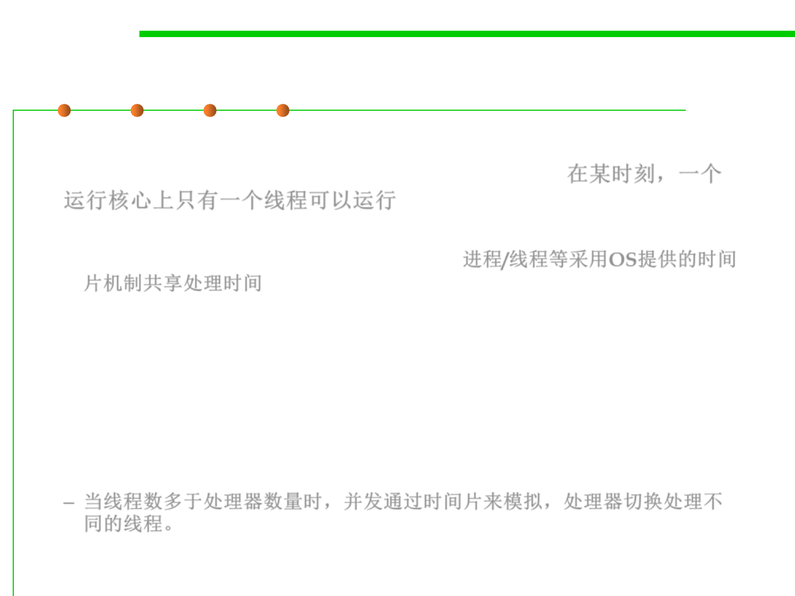

Time slicing
10.1 Concurrency and Thread-Safety
▪ In computer systems that have a single execution core, only one
thread is actually executing at any given moment. 在某时刻，一个
运行核心上只有一个线程可以运行
– Processing time for a single core is shared among processes and threads
through an OS feature called time slicing. 进程/线程等采用OS提供的时间
片机制共享处理时间
▪ Today’s computer systems to have multiple processors or processors
with multiple execution cores. So, how can I have many concurrent
threads with only one or two processors in my computer?
– When there are more threads than processors, concurrency is simulated
by time slicing, which means that the processor switches between threads.
– 当线程数多于处理器数量时，并发通过时间片来模拟，处理器切换处理不
同的线程。